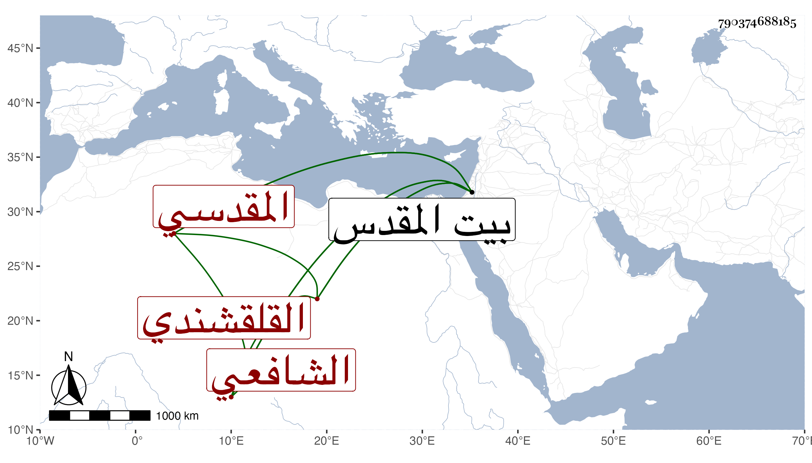

0902Sakhawi.DawLamic.ITO20230111-ara1.EIS1600.790374688185
Biography ID: 790374688185
813
علي بن عبد الرحيم بن محمد بن إسماعيل بن علي بن الحسن بن علي ابن إسماعيل العلاء وربما قيل له التقي أبو الحسن القلقشندي المقدسي الشافعي أخو أحمد ووالد إبراهيم الماضيين . ولد سنة أربع وثمانمائة ببيت المقدس وقرأ القرآن على الزين أبي بكر الهيثمي والتنبيه وعرضه على إبراهيم العرابي والحاجبية وعرضها على عمر البلخي وحضر في الفقه عند الزين ماهر وغيره وسمع على إبراهيم بن الشهاب أبي محمود والشمس محمد بن سعيد ويوسف الغانمي ومحمد بن يوسف البازي في آخرين ، وتنزل بالصلاحية طالبا ثم معيدا وتكمل له نصف خطابة المسجد الأقصى بعد موت أخيه ولقيته ببيت المقدس فقرأت عليه أشياء وكان خيرا . مات في يوم السبت ثاني ذي الحجة سنة أربع وسبعين رحمه الله .
